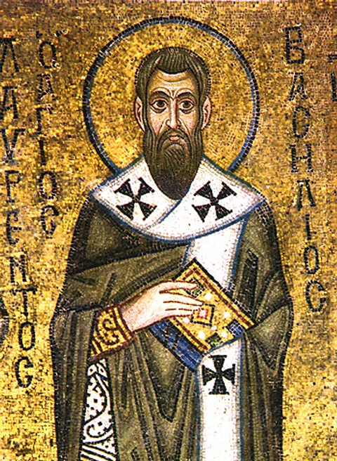
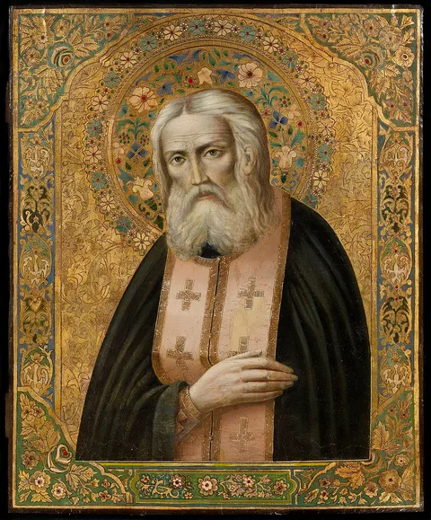
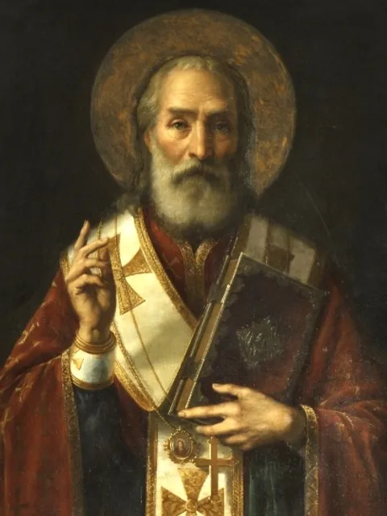
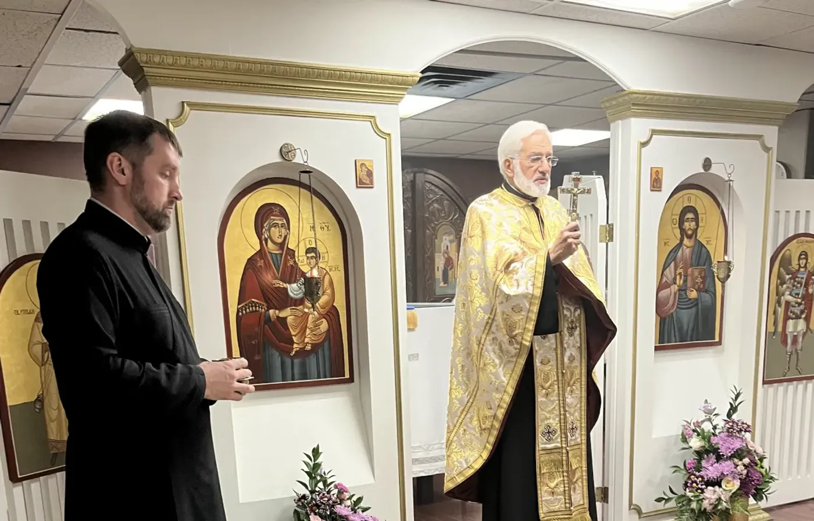
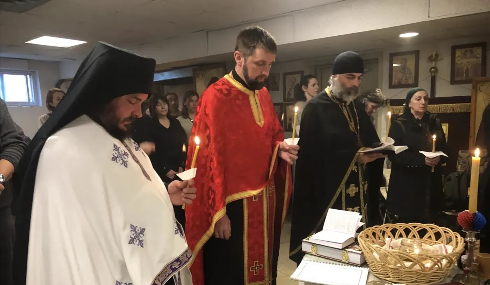

The youngest
Stories of the saints, beeswax and felt, singing by heart. At this age nothing is explained – it is shown and repeated until it becomes theirs.
Serbian Orthodox Parish
Their stories, their voices, and a candle you can light from anywhere.
With the saints give rest, O Christ, to the souls of Thy servants, where there is neither sickness, nor sorrow, nor sighing, but life everlasting.Kontakion of the memorial service
Voices
A parish does not read these words. It knows them. They are learned by ear, in church, standing next to somebody who already knows them. Here they are in Cyrillic and in Latin letters, with a translation, and with a voice for anyone far away or just starting.
The icons
An icon is not a picture, it is a record. Every mark on it means something, and once you can read them the iconostasis stops being decoration. These three hang in our church.
On Saylavy
This page tells you what to look for in an icon. Saylavy goes a step further: Sofia guides you, and St. John Chrysostom, St. Basil the Great, St. Seraphim of Sarov and St. Nicholas answer questions out loud, in a voice your own church has approved.
For a child who cannot read Cyrillic and would not interrupt a service to ask, this is how the question still gets asked.
Speak with Sofia St. John Chrysostom
St. John Chrysostom
St. Basil the Great
St. Seraphim of Sarov
St. NicholasFour of the voices that answer
Our Church



Photographs belong to the parish, taken from arhangelgavrilotoronto.com and used here only for the purpose of this design demonstration.
Children & Remembrance
A child who records their grandmother's story at eight will not have to remember it – they will have it. This is where the memorial wall and the Sunday school meet: what the children gather becomes the parish archive, and what is in the archive becomes what the children learn.
Stories of the saints, beeswax and felt, singing by heart. At this age nothing is explained – it is shown and repeated until it becomes theirs.
Cyrillic, Serbian as a language rather than a memory, and a first reading at a service. This is the age at which the Little Chronicler begins.
Recording, transcribing and editing. The older children conduct the interviews with the oldest parishioners and prepare the material for the Memory Pages.
The project
A child is given a list of questions and one older parishioner. They ask, they record, and they bring it back. The answers – with the family's permission – go into that person's Memory Page, and the child is credited as its chronicler.
Vojislav Kostić did this on his own, fifty years before there was a word for it. His archive of thirty-one recordings is the reason we still know what his father's Toronto Serbian sounded like.
–
All twelve questions asked. You are a chronicler.
Classroom
Thirty letters of Serbian Cyrillic, and one word for each. Tap any of them.
Days of Remembrance
Zadušnice are movable – they follow Pascha and the calendar rather than a fixed day of the month. The reckoning is below; the exact dates are confirmed by the parish each year.
On Zadušnice the faithful bring koljivo, candles and a list of names. On those days the memorial wall sets itself to the This Zadušnice filter, so that the priest and choir have the list in front of them.
Enter the day of repose and this returns the memorial days by Orthodox reckoning, in which the day of repose itself counts as the first day.
Dates are computed on the Gregorian calendar. If a family keeps the Julian reckoning, confirm with the parish office.
Request
The priest serves a Parastos for the departed at a family's request – on the fortieth day, on an anniversary, on Zadušnice, or whenever a family asks.
On koljivo. Boiled wheat, sweetened and dressed, stands before the icon during the service. A grain that falls into the earth does not remain only a grain – that is what the koljivo says, and why it is brought. If you would like the parish kitchen to prepare it, mark the box below.
This is a demonstration – the form sends nothing. In a live installation it arrives at the parish office and on the priest's calendar.
The Candle Stand
A candle stands here for forty days. If you are far from Richmond Hill – and many are – this is the same act, recorded and carried to the Liturgy.
No candles are lit yet. Let yours be the first.
In this demonstration candles are kept in your browser only. In a live installation the candle reaches the parish office and the diptych the priest reads from.
For the church
Print it, stand it in a glass holder beside the candles, and anyone with a telephone has the whole memorial in their hand. A child scans it and the page opens. That is what makes the church and this page one place rather than two.
There is one for each person as well, for a forty-day notice or a grave, and one each for the prayers and the Parastos request.
Download the codeFrom far away
A candle on a screen is an intention. This is a wax candle, on the stand, in Richmond Hill – lit by a parishioner at the next Liturgy, photographed where it stands, and the picture sent to you. If you are in Belgrade, Vancouver or Melbourne, this is the closest you can come.
The candle is always lit, even if the email fails. The photograph is the proof, not the service.
Вечан спомен · The Memorial Wall
Each arch below opens a Saylavy Memory Page – a life written down, a recorded voice, photographs, and where a family has chosen it, a time capsule that opens on a set day. Kept for good, and never charged by the month.
Every page on this wall is kept by Saylavy
This is a design demonstration. All six people below are fictional – the names, dates and life stories were written only to show how a Memory Page looks. No real parishioner is represented here.
No one matches that search.
Parish families may submit a Memory Page through the church office or directly with Saylavy. The parish keeps the archive; the family keeps ownership.
Saylavy is a digital legacy app: one place where a person, while living, sets down their story, their voice and their wishes – and then, in its own time, it reaches the people they loved. A parish is the natural place for it to stand.
A permanent tribute for one person – photographs, recordings, voice and a written life, in one place that does not vanish when a subscription lapses or a platform closes.
It is bought once. There is no monthly subscription to lapse, and no renewal somebody has to remember in twenty years, when the people who opened the page are themselves gone.
A page stays private while a person answers a quiet check-in. When they stop answering, the people they chose are notified. Quiet by design, active when it matters.
A message or recording that opens on a chosen date – an eighteenth birthday, a wedding, an anniversary. It stays sealed until the day comes.
At the church office, or by ticking the box on the Parastos request. Nothing technical is required of anyone.
Photographs, letters, recordings, what people remember. The parish helps older families gather and record.
Saylavy keeps it. The family holds ownership and decides what is public and what stays within the family.
An arch appears on this wall, candles can be lit, and the name enters the list read on Zadušnice.
The family decides what goes in, what is public, and what stays within the family. They can export it or close it at any time.
Keeping the page, Proof of Life and the time capsules. Bought once, with no monthly subscription that can lapse.
The arch on the wall, the candles, and the name on the list read at Zadušnice and the Parastos. The parish does not hold the data – it holds the remembrance.
Find Us
The memorial wall does not replace coming. The names are read aloud, in the church, before the icon of the Archangel Gabriel.
Give
Candles, koljivo, the heating through the winter, and a Sunday school nobody charges for. A gift here goes to the parish, not to us.
{kind=link}